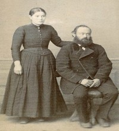

Lovise og Håkon sin slekt og familie
Lovise f. Eggan og Håkon Wahl
Personside 1 701
Alexander Humpredson Samson
M, #42501, d. 1643
Familie: Ermegaard Casparsdatter (f. omtrent 1590)
| Datter | Anna Samson+ (f. 1610, d. 18 januar 1646) |
| Datter | Gidsken Alexandersdatter Sampson+ (f. omtrent 1615, d. 1663) |
Biografi
Alexander Humpredson Samson ble født på/i London, England. Han giftet seg med Ermegaard Casparsdatter. Han døde i 1643 på/i Trondheim, Sør-Trøndelag.
| Sist redigert | 6 april 2020 00:00:00 |
Ermegaard Casparsdatter
K, #42502, f. omtrent 1590
Foreldre
| Far | Caspar Pedersen Arctander (d. 17 juni 1594) |
Familie: Alexander Humpredson Samson (d. 1643)
| Datter | Anna Samson+ (f. 1610, d. 18 januar 1646) |
| Datter | Gidsken Alexandersdatter Sampson+ (f. omtrent 1615, d. 1663) |
Biografi
Ermegaard Casparsdatter ble født omtrent 1590. Hun giftet seg med Alexander Humpredson Samson.
| Sist redigert | 6 april 2020 00:00:00 |
| Slektskap | 3-menning 13 ganger forskjøvet til Håkon Wahl |
Caspar Pedersen Arctander
M, #42503, d. 17 juni 1594
Foreldre
| Far | Peder Nielsen Arctander (f. omtrent 1533, d. 1609) |
Familie:
| Datter | Ermegaard Casparsdatter+ (f. omtrent 1590) |
Biografi
Caspar Pedersen Arctander døde den 17 juni 1594 på/i Trondheim, Sør-Trøndelag.
| Sist redigert | 16 oktober 2009 00:00:00 |
| Slektskap | Søskenbarn 14 ganger forskjøvet til Håkon Wahl |
Peder Nielsen Arctander
M, #42504, f. omtrent 1533, d. 1609
Foreldre
| Far | Nils Lauritsson (f. omtrent 1490, d. 1554) |
Familie:
| Sønn | Caspar Pedersen Arctander+ (d. 17 juni 1594) |
Biografi
Peder Nielsen Arctander ble født omtrent 1533. Han døde i 1609.
| Sist redigert | 16 oktober 2009 00:00:00 |
| Slektskap | Bror av 12.tippoldefar/mor til Håkon Wahl |
Gidsken Nielsdatter Ørum
K, #42505
Foreldre
| Far | Niels Jørgensen Ørum (d. 1766) |
| Mor | Gjertrud Jensdatter Parelius (f. omtrent 1702, d. 1779) |
Familie: Ingebrigt Henriksen Anchel Moe
| Datter | Uldrika Bryggmann Moe+ |
Biografi
Gidsken Nielsdatter Ørum giftet seg med Ingebrigt Henriksen Anchel Moe.
| Sist redigert | 1 januar 2007 00:00:00 |
| Slektskap | 5-menning 8 ganger forskjøvet til Håkon Wahl 5-menning 6 ganger forskjøvet til Lovise Julie Eggan |
Ingebrigt Henriksen Anchel Moe
M, #42506
Familie: Gidsken Nielsdatter Ørum
| Datter | Uldrika Bryggmann Moe+ |
Biografi
Ingebrigt Henriksen Anchel Moe giftet seg med Gidsken Nielsdatter Ørum.
| Sist redigert | 1 januar 2007 00:00:00 |
Uldrika Bryggmann Moe
K, #42507
Foreldre
Familie: Niels Jonsen
| Datter | Berethe Nielsdatter+ |
Biografi
Uldrika Bryggmann Moe giftet seg med Niels Jonsen.
| Sist redigert | 1 januar 2007 00:00:00 |
| Slektskap | 6-menning 7 ganger forskjøvet til Håkon Wahl 6-menning 5 ganger forskjøvet til Lovise Julie Eggan |
Niels Jonsen
M, #42508
Familie: Uldrika Bryggmann Moe
| Datter | Berethe Nielsdatter+ |
Biografi
Niels Jonsen giftet seg med Uldrika Bryggmann Moe.
| Sist redigert | 9 september 2015 00:00:00 |
Berethe Nielsdatter
K, #42509
Foreldre
Familie: John Nilsen
| Datter | Nicoline Margrethe Johansdatter+ |
Biografi
Berethe Nielsdatter giftet seg med John Nilsen.
| Sist redigert | 1 januar 2007 00:00:00 |
| Slektskap | 7-menning 6 ganger forskjøvet til Håkon Wahl 7-menning 4 ganger forskjøvet til Lovise Julie Eggan |
John Nilsen
M, #42510
Familie: Berethe Nielsdatter
| Datter | Nicoline Margrethe Johansdatter+ |
Biografi
John Nilsen giftet seg med Berethe Nielsdatter.
| Sist redigert | 1 januar 2007 00:00:00 |
Nicoline Margrethe Johansdatter
K, #42511
Foreldre
Familie: Andreas Johnsen Lonkan
| Sønn | Johannes Lonkan+ (f. 1851, d. 23 februar 1928) |
Biografi
Nicoline Margrethe Johansdatter ble født på/i Skjærvær, Jøa, Fosnes, Nord-Trøndelag. Hun giftet seg med Andreas Johnsen Lonkan.
| Sist redigert | 1 januar 2007 00:00:00 |
| Slektskap | 8-menning 5 ganger forskjøvet til Håkon Wahl 8-menning 3 ganger forskjøvet til Lovise Julie Eggan |
Andreas Johnsen Lonkan
M, #42512
Familie: Nicoline Margrethe Johansdatter
| Sønn | Johannes Lonkan+ (f. 1851, d. 23 februar 1928) |
Biografi
Andreas Johnsen Lonkan ble født på/i Lånkan, Sparbu, Steinkjer, Nord-Trøndelag. Han giftet seg med Nicoline Margrethe Johansdatter.
| Sist redigert | 1 januar 2007 00:00:00 |
Johannes Lonkan
M, #42513, f. 1851, d. 23 februar 1928
Foreldre
Familie 1: Mali Andreasdatter (f. før 1865)
| Datter | Gunelie Lonkan (f. før 1885) |
Familie 2: Olise Andrea Nilsdatter Rypnes (f. 1 mai 1863, d. desember 1956)
| Datter | Astrid Olava Lonkan (f. 22 september 1890, d. 23 august 1910) |
| Datter | Julie Alfhilde Lonkan (f. 1 mai 1892) |
| Sønn | Karle Gustav Lonkan (f. 16 september 1894, d. 25 desember 1913) |
| Datter | Aslaug Othelie Lonkan Johannessen (f. 9 juli 1896, d. september 1918) |
| Sønn | Martin Engelbregt Lonkan+ (f. 15 juli 1899, d. 29 juni 1974) |
| Sønn | Hjalmar Aleksander Lonkan+ (f. 29 april 1903, d. 22 desember 1971) |
{kind=link}
Andrea og Johannes Lonkan
Biografi
Johannes Lonkan ble født i 1851 på/i Botnan, Vemundvik, Namsos, Nord-Trøndelag. Han giftet seg med Olise Andrea Nilsdatter Rypnes. Han døde den 23 februar 1928 på/i Namsos, Nord-Trøndelag. Han ble gravlagt den 29 februar 1928 på/i Namsos kirkegård, Namsos, Nord-Trøndelag.
Han døde den 23 februar 1928 på/i Namsos, Nord-Trøndelag. Han ble gravlagt den 29 februar 1928 på/i Namsos kirkegård, Namsos, Nord-Trøndelag.
Han døde den 23 februar 1928 på/i Namsos, Nord-Trøndelag. Han ble gravlagt den 29 februar 1928 på/i Namsos kirkegård, Namsos, Nord-Trøndelag. Johannes Lonkan bodde i 1900 på/i Vetterhus 5/4, Vetterhus; Vemundvik, Namsos, Nord-Trøndelag. Han og Olise Andrea Nilsdatter Rypnes flyttet til Namsos, Nord-Trøndelag, omtrent 1906.
| Sist redigert | 28 juli 2024 00:05:15 |
| Slektskap | 9-menning 4 ganger forskjøvet til Håkon Wahl 9-menning 2 ganger forskjøvet til Lovise Julie Eggan |
Olise Andrea Nilsdatter Rypnes
K, #42514, f. 1 mai 1863, d. desember 1956
Foreldre
| Far | Nils Andersen Rypnes (f. 1830) |
| Mor | Kjerstina Olsdatter (f. 1840) |
Familie: Johannes Lonkan (f. 1851, d. 23 februar 1928)
| Datter | Astrid Olava Lonkan (f. 22 september 1890, d. 23 august 1910) |
| Datter | Julie Alfhilde Lonkan (f. 1 mai 1892) |
| Sønn | Karle Gustav Lonkan (f. 16 september 1894, d. 25 desember 1913) |
| Datter | Aslaug Othelie Lonkan Johannessen (f. 9 juli 1896, d. september 1918) |
| Sønn | Martin Engelbregt Lonkan+ (f. 15 juli 1899, d. 29 juni 1974) |
| Sønn | Hjalmar Aleksander Lonkan+ (f. 29 april 1903, d. 22 desember 1971) |

Andrea og Johannes Lonkan
Biografi
Olise Andrea Nilsdatter Rypnes ble født den 1 mai 1863 på/i Vemundvik, Nord-Trøndelag. Hun giftet seg med Johannes Lonkan. Hun døde i desember 1956 på/i Namsos, Nord-Trøndelag. Hun ble gravlagt den 18 desember 1956 på/i Namsos kirkegård, Namsos, Nord-Trøndelag.
Hun døde i desember 1956 på/i Namsos, Nord-Trøndelag. Hun ble gravlagt den 18 desember 1956 på/i Namsos kirkegård, Namsos, Nord-Trøndelag. Olise Andrea Nilsdatter Rypnes was also known as Olise Andrea Lonkan. Hun was also known as Andrea Rypnes. Hun and Johannes Lonkan flyttet til Namsos, Nord-Trøndelag, omtrent 1906.
| Sist redigert | 11 november 2025 23:23:22 |
Astrid Olava Lonkan
K, #42515, f. 22 september 1890, d. 23 august 1910
Foreldre
| Far | Johannes Lonkan (f. 1851, d. 23 februar 1928) |
| Mor | Olise Andrea Nilsdatter Rypnes (f. 1 mai 1863, d. desember 1956) |
Biografi
Astrid Olava Lonkan ble født den 22 september 1890 på/i Vemundvik, Namsos, Nord-Trøndelag. Hun døde av tuberkulose den 23 august 1910 på/i Namsos, Nord-Trøndelag. Hun ble gravlagt den 29 august 1910 på/i Namsos, Nord-Trøndelag.
| Sist redigert | 16 juli 2022 20:31:03 |
| Slektskap | 10-menning 3 ganger forskjøvet til Håkon Wahl 10-menning 1 gang forskjøvet til Lovise Julie Eggan |
Julie Alfhilde Lonkan
K, #42516, f. 1 mai 1892
Foreldre
| Far | Johannes Lonkan (f. 1851, d. 23 februar 1928) |
| Mor | Olise Andrea Nilsdatter Rypnes (f. 1 mai 1863, d. desember 1956) |
Biografi
Julie Alfhilde Lonkan ble født den 1 mai 1892 på/i Namsos, Nord-Trøndelag.
Julie Alfhilde Lonkan bodde på/i Bergen, Hordaland.
| Sist redigert | 1 januar 2007 00:00:00 |
| Slektskap | 10-menning 3 ganger forskjøvet til Håkon Wahl 10-menning 1 gang forskjøvet til Lovise Julie Eggan |
Karle Gustav Lonkan
M, #42517, f. 16 september 1894, d. 25 desember 1913
Foreldre
| Far | Johannes Lonkan (f. 1851, d. 23 februar 1928) |
| Mor | Olise Andrea Nilsdatter Rypnes (f. 1 mai 1863, d. desember 1956) |
Biografi
Karle Gustav Lonkan ble født den 16 september 1894 på/i Vemundvik, Namsos, Nord-Trøndelag. Han døde av tuberkulose på pleiehjemmet den 25 desember 1913 på/i Namsos, Nord-Trøndelag. Han ble gravlagt den 2 januar 1914 på/i Namsos, Nord-Trøndelag.
| Sist redigert | 16 juli 2022 16:07:07 |
| Slektskap | 10-menning 3 ganger forskjøvet til Håkon Wahl 10-menning 1 gang forskjøvet til Lovise Julie Eggan |
Aslaug Othelie Lonkan Johannessen
K, #42518, f. 9 juli 1896, d. september 1918
Foreldre
| Far | Johannes Lonkan (f. 1851, d. 23 februar 1928) |
| Mor | Olise Andrea Nilsdatter Rypnes (f. 1 mai 1863, d. desember 1956) |
Biografi
Aslaug Othelie Lonkan Johannessen ble født den 9 juli 1896 på/i Vemundvik, Namsos, Nord-Trøndelag. Hun døde i september 1918. Hun ble gravlagt den 27 september 1918 på/i Namsos kirkegård, Namsos, Nord-Trøndelag.
Aslaug Othelie Lonkan Johannessen bodde på/i Harstad, Troms.
| Sist redigert | 9 mai 2021 00:00:00 |
| Slektskap | 10-menning 3 ganger forskjøvet til Håkon Wahl 10-menning 1 gang forskjøvet til Lovise Julie Eggan |
Martin Engelbregt Lonkan
M, #42519, f. 15 juli 1899, d. 29 juni 1974
Foreldre
| Far | Johannes Lonkan (f. 1851, d. 23 februar 1928) |
| Mor | Olise Andrea Nilsdatter Rypnes (f. 1 mai 1863, d. desember 1956) |
Familie: Amalie (f. 1908, d. 1942)
| Sønn | Bjørn Johannes Lonkan |
| Sønn | Arne Lonkan |
Biografi
Martin Engelbregt Lonkan ble født den 15 juli 1899 på/i Vemundvik, Namsos, Nord-Trøndelag. Han giftet seg med Amalie. Han døde den 29 juni 1974 på/i Namsos, Nord-Trøndelag. Han ble gravlagt den 5 juli 1974 på/i Namsos kirkegård, Namsos, Nord-Trøndelag.
Martin Engelbregt Lonkan was also known as Martin Engelbregt Johannessen. Han ble konfirmert den 9 mai 1915 på/i Vemundvik, Nord-Trøndelag.
| Sist redigert | 24 oktober 2021 00:00:00 |
| Slektskap | 10-menning 3 ganger forskjøvet til Håkon Wahl 10-menning 1 gang forskjøvet til Lovise Julie Eggan |
Hjalmar Aleksander Lonkan
M, #42520, f. 29 april 1903, d. 22 desember 1971
Foreldre
| Far | Johannes Lonkan (f. 1851, d. 23 februar 1928) |
| Mor | Olise Andrea Nilsdatter Rypnes (f. 1 mai 1863, d. desember 1956) |
Familie: Elfrida Maria Pettersen Havn (f. 28 juli 1904, d. 5 april 1990)
| Sønn | Arne Johannes Johannessen |
| Sønn | Petter Jostein Johannessen (f. 28 desember 1932, d. 30 januar 2010) |
| Sønn | Øystein Terje Johannessen (f. 30 juni 1943, d. 18 april 2013) |
Biografi
Hjalmar Aleksander Lonkan ble født den 29 april 1903 på/i Vemundvik, Namsos, Nord-Trøndelag. Han giftet seg med Elfrida Maria Pettersen Havn den 15 juli 1929 på/i Tjøtta, Alstahaug, Nordland. Han døde den 22 desember 1971 på/i Namsos, Nord-Trøndelag. Han ble gravlagt den 29 desember 1971 på/i Namsos kirkegård, Namsos, Nord-Trøndelag.
Hjalmar Aleksander Lonkan was also known as Hjalmar Aleksander Johannessen Lonkan.
| Sist redigert | 18 juli 2022 16:05:57 |
| Slektskap | 10-menning 3 ganger forskjøvet til Håkon Wahl 10-menning 1 gang forskjøvet til Lovise Julie Eggan |
Gunelie Lonkan
K, #42521, f. før 1885
Foreldre
| Far | Johannes Lonkan (f. 1851, d. 23 februar 1928) |
| Mor | Mali Andreasdatter (f. før 1865) |
Biografi
Gunelie Lonkan ble født før 1885.
Gunelie Lonkan was also known as Gunelie Sandmo.
| Sist redigert | 1 januar 2007 00:00:00 |
| Slektskap | 10-menning 3 ganger forskjøvet til Håkon Wahl 10-menning 1 gang forskjøvet til Lovise Julie Eggan |
Mali Andreasdatter
K, #42522, f. før 1865
Familie: Johannes Lonkan (f. 1851, d. 23 februar 1928)
| Datter | Gunelie Lonkan (f. før 1885) |
Biografi
Mali Andreasdatter ble født før 1865 på/i Verdal, Nord-Trøndelag.
| Sist redigert | 1 januar 2007 00:00:00 |
Amalie
K, #42523, f. 1908, d. 1942
Familie: Martin Engelbregt Lonkan (f. 15 juli 1899, d. 29 juni 1974)
| Sønn | Bjørn Johannes Lonkan |
| Sønn | Arne Lonkan |
Biografi
Amalie ble født i 1908 på/i Nordland. Hun giftet seg med Martin Engelbregt Lonkan. Hun døde i 1942 på/i Namsos, Nord-Trøndelag. Hun ble gravlagt den 14 november 1942 på/i Namsos kirkegård, Namsos, Nord-Trøndelag.
Amalie was also known as Amalie Lonkan Johannessen.
| Sist redigert | 9 mai 2021 00:00:00 |